about
← back homewho
The girl behind the screen:
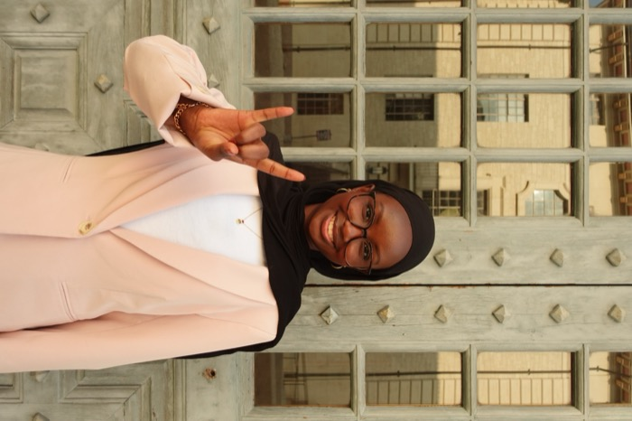
Nice to meet you, I'm Mariam!
Stories have always been my bread and butter. I used to check out so many library books at a time that my dad temporarily banned me from borrowing more.
That love of stories took me down a winding path, through journalism, computer science, and psychology, before I found UX, where I could tell stories through pixels instead of paragraphs.
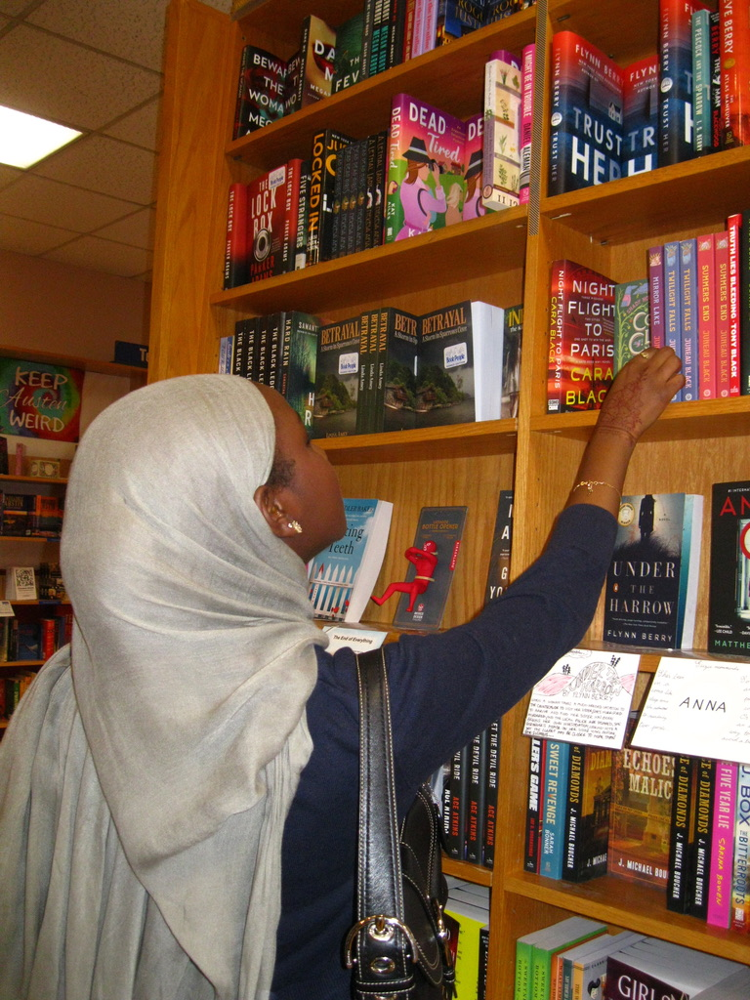
design philosophy
Finding my niche has always meant blending creativity with technical thinking. Exploring journalism, computer science, and psychology taught me how to step outside my own perspective and understand how others think, a mentality that now shapes how I research, critique, and design. UX became the perfect blend of those worlds: connecting with people through genuine, empathetic interactions and reflecting those insights back into digital designs. By designing with communities, not just for them, I help teams bridge the gap between company and consumer to create products that truly resonate.
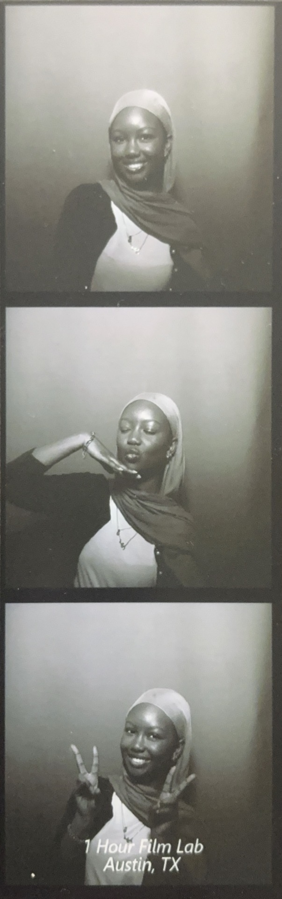
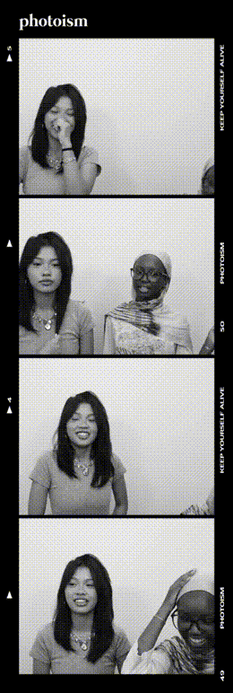
snapshots
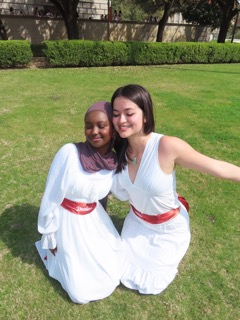
me and my big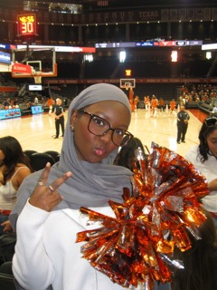
UT basketball alwayss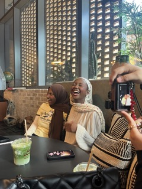
cafes <3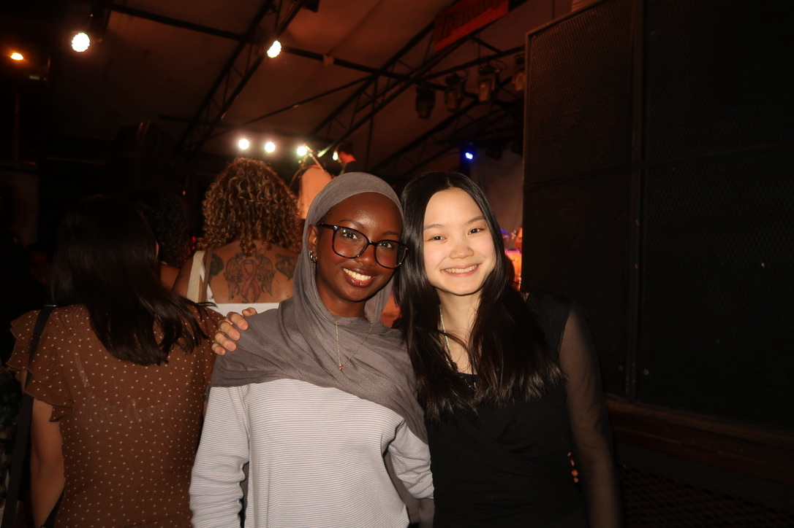
sarah kinsley concert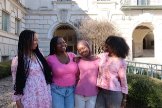
black history month photoshootquick questions, ai-style
a few of my favorite things
I reached my Goodreads goal of 30 books in 2025 with genres ranging from fantasy to science to mystery to memoir. My favorite reads? A Drop of Corruption, Blood Over Bright Haven, Project Hail Mary, Not Quite Dead Yet, What Kind of Paradise, Everything is Tuberculosis.
The field of journalism holds a special place in my heart. Here's a story I wrote back in high school that I am still so proud of.
Cryptic crosswords (a recent obsession), romcoms, making Spotify playlists, video diaries, camera eats first (see below), kdramas, cafes, long walks, live music, reading the news, cafes.
favorite things · by city
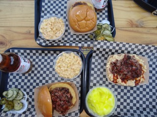
Brisket sandwich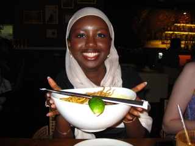
Khao soi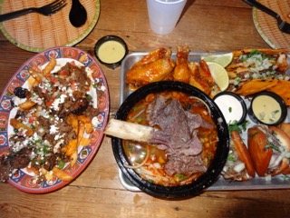
Angry pho birria platter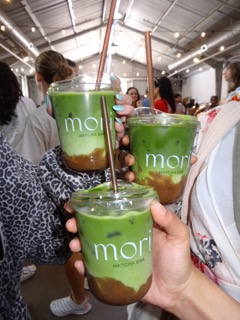
Banana bread matcha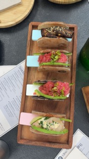
Happy hour handrolls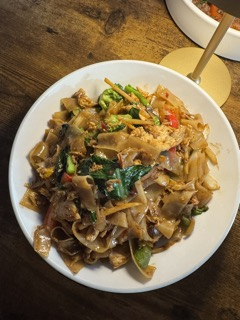
Pad kee maoon my shelf
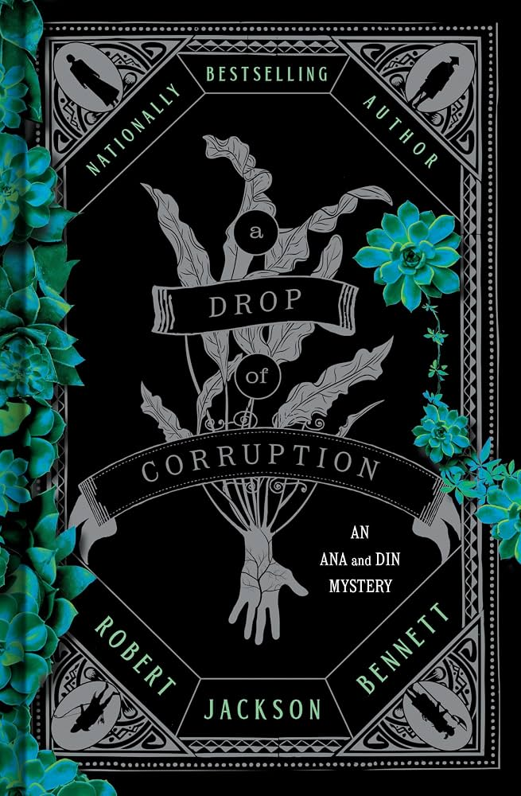
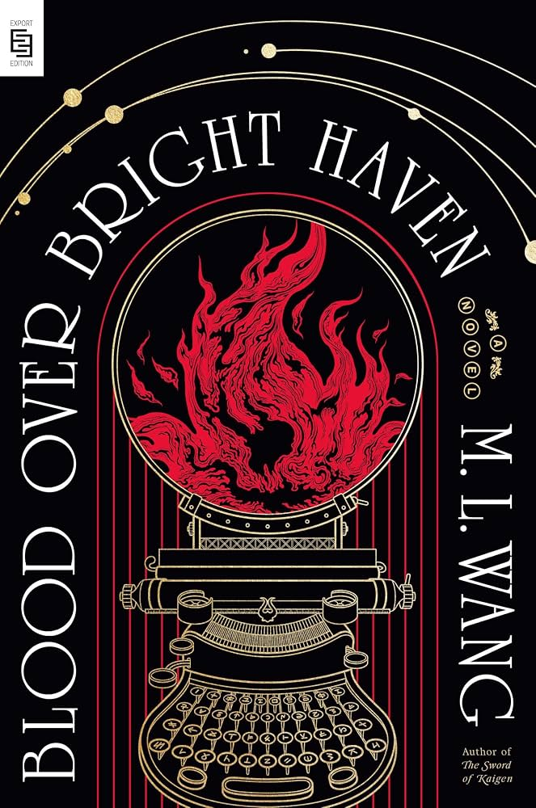
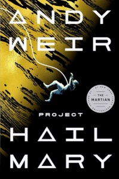
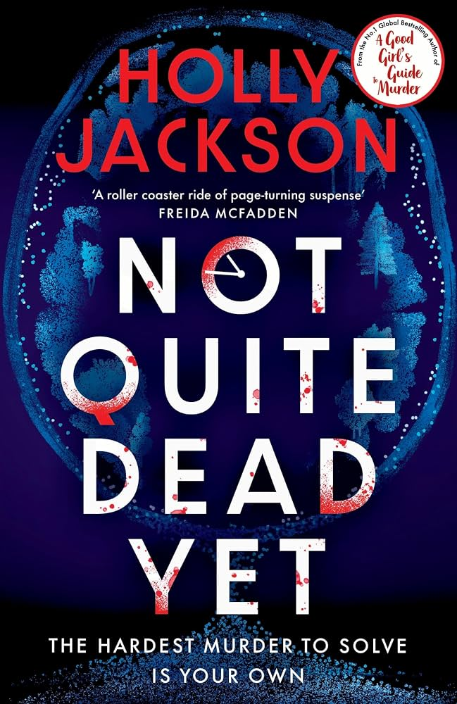
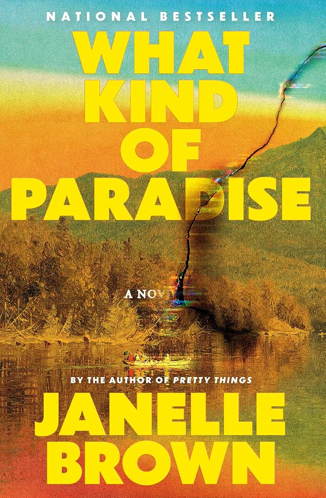
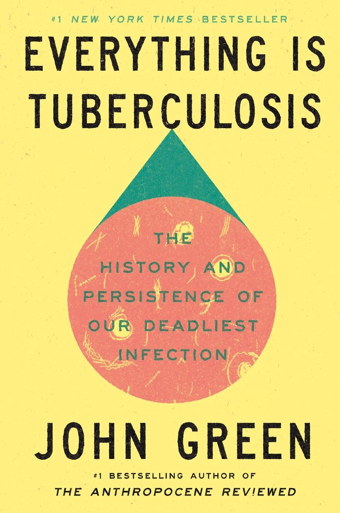